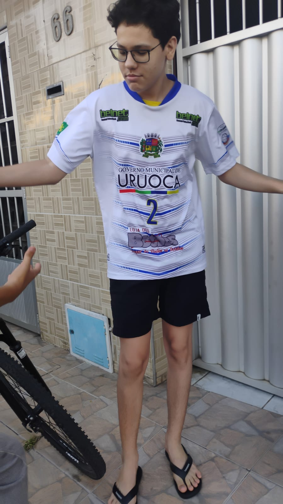

Navegue pelo nosso site para conhecer mais sobre nossos produtos, contratar nossos serviços, conhecer nossos parceiros e conferir nosso portfólio de trabalhos realizados.
A missão do SartoClub é oferecer soluções de alta qualidade para atender às necessidades individuais de cada cliente, garantindo satisfação e excelência em cada projeto. Nossos valores incluem compromisso com a qualidade, inovação, ética e responsabilidade social. Buscamos constantemente aprimorar nossos serviços e produtos.
